Strategic Innovation & Emerging Technology
Strategic Innovation &
Emerging Technology
Exploring new technologies, driving innovation, and enabling
smarter manufacturing for a better future at Ashley.
Quick Access
Latest Updates
 Automation in Material Handling: Key Trends and OpportunitiesExplore the latest trends in AGV/AMR and intelligent material handling systems.Knowledge•••
Automation in Material Handling: Key Trends and OpportunitiesExplore the latest trends in AGV/AMR and intelligent material handling systems.Knowledge•••
 Ecru Factory – New Robotics Pilot ProgramOverview of the pilot program, scope and timeline.Factory•••
Ecru Factory – New Robotics Pilot ProgramOverview of the pilot program, scope and timeline.Factory•••
 New Vendor Added: XYZ AutomationVendor profile and key capabilities.Vendor•••
Project Handover Template UpdatedUpdated template with latest guidelines and checklist.Resource•••
New Vendor Added: XYZ AutomationVendor profile and key capabilities.Vendor•••
Project Handover Template UpdatedUpdated template with latest guidelines and checklist.Resource•••
Knowledge Areas
Explore our core focus areas and recent highlights.
Factories
Explore information about Ashley’s global manufacturing facilities, including
factory overviews, capabilities, processes, equipment, automation initiatives,
team contacts, and key resources.
Our Factories

Casegoods manufacturing facility focused
on wood products and assembly.
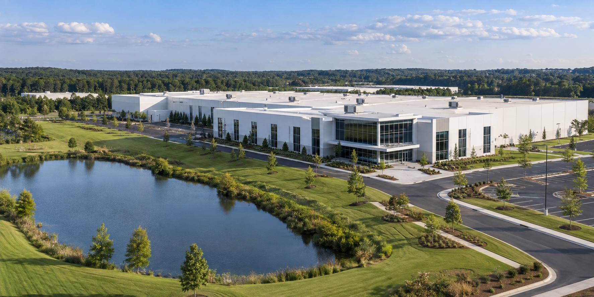
Upholstery manufacturing facility with
cutting, sewing and assembly operations.

Casegoods manufacturing facility with
advanced wood processing capabilities.

Upholstery manufacturing facility
specializing in reclining and motion furniture.
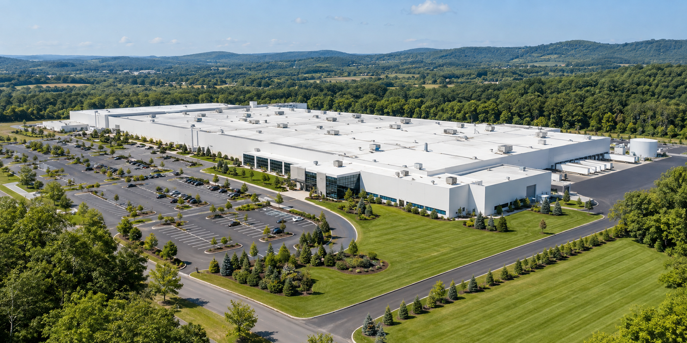
Casegoods manufacturing facility with
finishing and distribution operations.

Upholstery and casegoods manufacturing
facility with large-scale production capabilities.
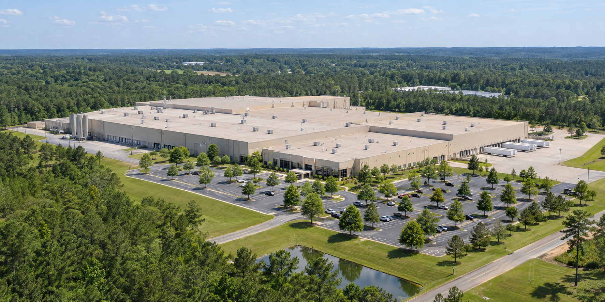
Upholstery manufacturing facility focused
on stationary seating and casegoods.
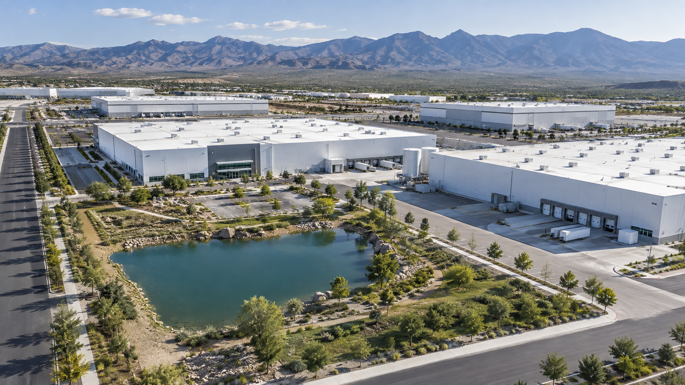
Upholstery and casegoods manufacturing
facility serving North America.

Upholstery manufacturing facility with
advanced cutting and sewing operations.
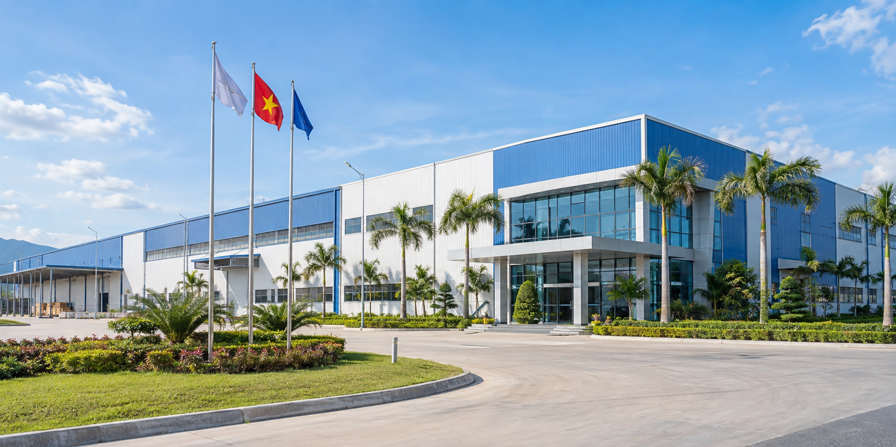
Casegoods and upholstery manufacturing
facility supporting global supply chain.
Vendors
Access vendor-related documents, quotes, technical materials, research
reports and other resources to support supplier evaluation, collaboration
and project planning.
Vendor Resources
Browse and search all vendor-related files. Use filters to quickly find the information you need.
Resources
Access useful templates, standards, training materials and tools to
support innovation, manufacturing and automation initiatives.
Everything you need to work more efficiently and effectively.
Browse Topics
management, procurement,
technical documentation and more.→ ♢Standards & GuidelinesCompany standards, industry
guidelines, compliance requirements
and best practices.→ ⌂Training & ReferenceTraining materials, user guides,
technical references and
knowledge resources.→ ⌕Tools & LinksUseful tools, external links and
platforms to support daily work
and technical exploration.→
Featured Resources
View All →Our Team
Meet the Strategic Innovation & Emerging Technology team.
Explore our team structure, roles and reporting relationships. Select a person to
view their profile and contact information.
Organization
Templates
Standard templates for project management, procurement, technical documentation and daily operations.
Standards & Guidelines
Company standards, industry guidelines, compliance requirements and established best practices.
Training & Reference
Training materials, user guides, technical references and practical knowledge resources.
Tools & Links
Useful tools, external links and digital platforms supporting daily work and technical exploration.
Technology & Innovation
Explore emerging technologies, digital solutions, and innovative approaches
that can shape the future of our products, manufacturing, and operations.
Find research, case studies, pilots, and technical resources to inspire new ideas
and drive continuous innovation.
Browse Topics
 ◎AI & Intelligent SystemsArtificial intelligence, machine learning,
◎AI & Intelligent SystemsArtificial intelligence, machine learning,generative AI, and intelligent systems for
design, manufacturing, quality and operations.→ ◇Digital Twin & SimulationVirtual modeling, simulation, digital twin
technologies and data-driven decision
support.→
 ⌘IoT & Connected SystemsSensors, data collection, monitoring
⌘IoT & Connected SystemsSensors, data collection, monitoringplatforms, and connected systems for
smart manufacturing.→
 ▱Additive Manufacturing3D printing technologies, materials,
▱Additive Manufacturing3D printing technologies, materials,applications, and case studies for furniture
and manufacturing.→
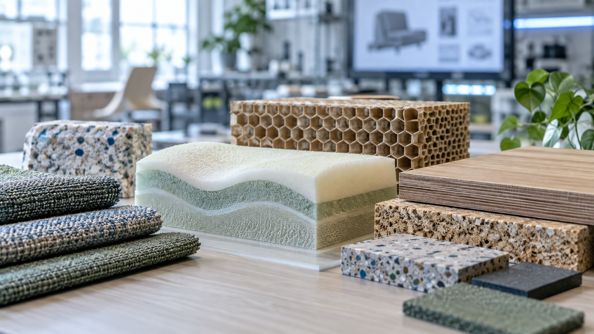
♙Emerging TechnologiesNew materials, advanced manufacturingmethods, sustainable solutions and other
emerging technologies.→
 ↗Research & Innovation ProjectsTechnology research, pilot projects,
↗Research & Innovation ProjectsTechnology research, pilot projects,proof of concept, case studies and
lessons learned.→
AI & Intelligent Systems
Artificial intelligence, machine learning and intelligent solutions for design, manufacturing and operations.
Digital Twin & Simulation
Virtual modeling, simulation, digital twin technologies and data-driven decision support.
IoT & Connected Systems
Sensors, data collection, monitoring platforms and connected systems for smart manufacturing.
Additive Manufacturing
3D printing technologies, materials, applications and case studies for furniture and manufacturing.
Emerging Technologies
New materials, advanced manufacturing methods, sustainable solutions and other emerging technologies.
Research & Innovation Projects
Technology research, pilot projects, proofs of concept, case studies and lessons learned.
Arcadia
Arcadia, Wisconsin, USA · Casegoods manufacturing focused on wood products and assembly.
Advance
Advance, North Carolina, USA · Upholstery manufacturing with cutting, sewing and assembly operations.
Chippewa Falls
Chippewa Falls, Wisconsin, USA · Casegoods manufacturing with advanced wood processing capabilities.
Ecru
Ecru, Mississippi, USA · Upholstery manufacturing specializing in reclining and motion furniture.
Leesport
Leesport, Pennsylvania, USA · Casegoods manufacturing with finishing and distribution operations.
Mesquite
Mesquite, Texas, USA · Upholstery and casegoods manufacturing with large-scale production capabilities.
Ripley
Ripley, Mississippi, USA · Upholstery manufacturing focused on stationary seating and casegoods.
Saltillo
Saltillo, Coahuila, Mexico · Upholstery and casegoods manufacturing serving North America.
Verona
Verona, Mississippi, USA · Upholstery manufacturing with advanced cutting and sewing operations.
Vietnam
Binh Duong, Vietnam · Casegoods and upholstery manufacturing supporting the global supply chain.
Product & Materials
Explore knowledge about our products, materials, components, and product design.
Find technical information, design insights, material specifications, and related resources.
Browse Topics
and related materials→
 Upholstery ProductsSofa and seating products,
Upholstery ProductsSofa and seating products,structures, fabrics and design→
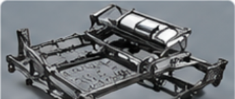
Mechanisms & ComponentsMechanisms, hardware andkey functional components→ Foam & CushioningFoam materials, cushion design,
and related products→
 MaterialsEngineered wood, panels, fabrics,
MaterialsEngineered wood, panels, fabrics,leather and other materials→
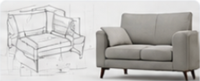
Product DesignDesign concepts, styling,standards and best practices→
Manufacturing & Automation
Explore knowledge about manufacturing processes, production operations,
automation technologies, robotics, quality, and continuous improvement.
Find standardized procedures, case studies, technical resources, and best
practices to support efficient, safe, and high-quality manufacturing.
Browse Topics
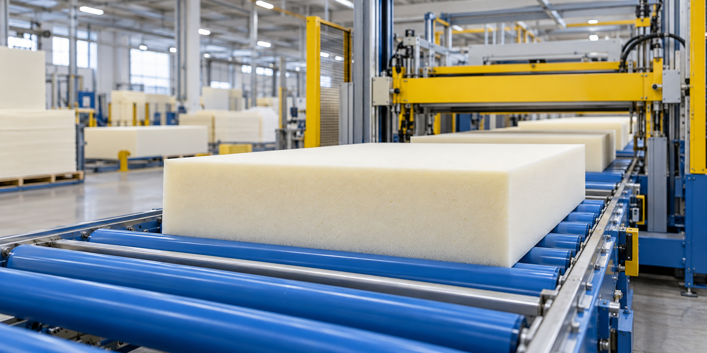
⚙Manufacturing ProcessesFoam pouring, blow molding, cutting,sewing, assembly and other manufacturing
processes.→
 ▥Production OperationsLine setup, work instructions, standard
▥Production OperationsLine setup, work instructions, standardoperating procedures (SOPs), capacity
planning and shop floor management.→
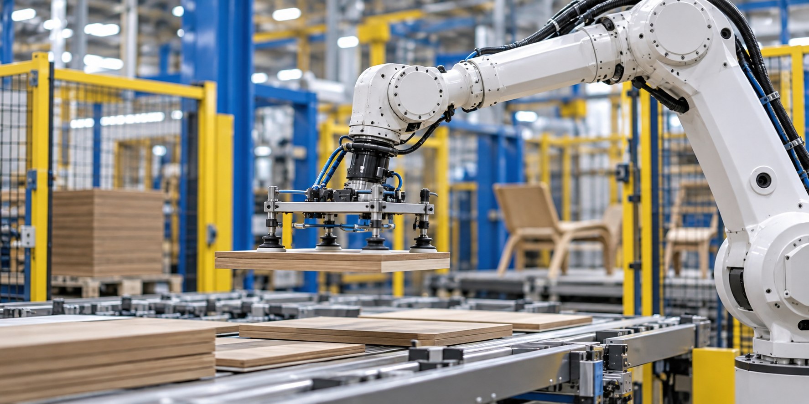
♜Industrial RoboticsApplications, integration, programming,maintenance and case studies for industrial
robots and collaborative robots.→
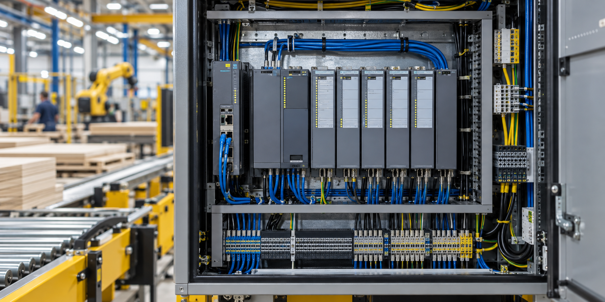
☷Control & Automation SystemsPLC, sensors, SCADA, control systems,equipment integration and line automation.→
 ⌕Quality & TestingIn-process and final inspection, testing
⌕Quality & TestingIn-process and final inspection, testingequipment, quality standards, defect analysis
and vision inspection.→
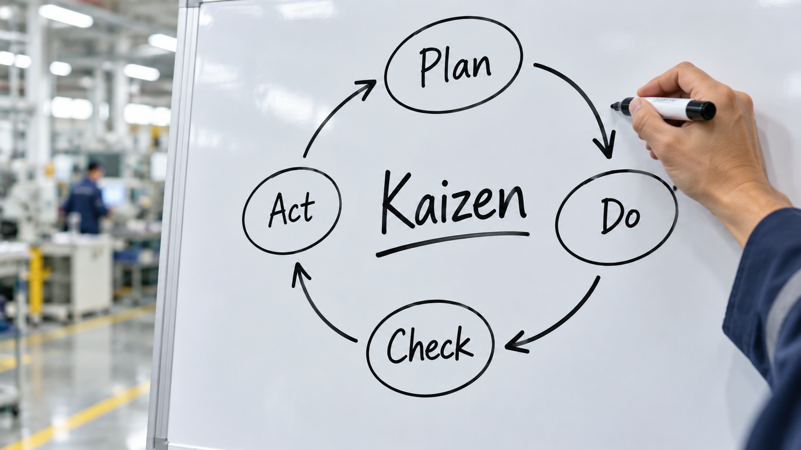
↗Process ImprovementProcess optimization, Lean manufacturing,problem solving, best practices and case
studies.→
Manufacturing Processes
Foam pouring, blow molding, cutting, sewing, assembly and related manufacturing processes.
Production Operations
Line setup, work instructions, SOPs, capacity planning and shop floor management resources.
Industrial Robotics
Applications, integration, programming, maintenance and case studies for industrial and collaborative robots.
Control & Automation Systems
PLC, sensors, SCADA, control systems, equipment integration and line automation resources.
Quality & Testing
Inspection methods, testing equipment, quality standards, defect analysis and vision inspection resources.
Process Improvement
Lean manufacturing, problem solving, best practices and continuous improvement case studies.
Adjustable Bases
Design, structure, components and related materials for adjustable base products.
Upholstery Products
Product knowledge, structures, fabrics and design resources for sofas and seating.
Mechanisms & Components
Mechanisms, hardware, specifications and knowledge for key functional components.
Foam & Cushioning
Foam materials, cushion construction, testing and related product knowledge.
Materials
Technical information about engineered wood, panels, fabrics, leather and other materials.
Product Design
Design concepts, styling standards, development practices and product design resources.